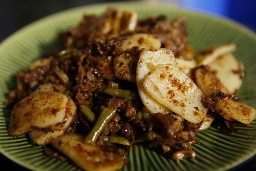
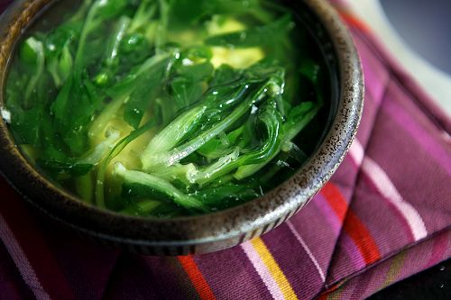

有什么不好吗？ @ Dec 07, 2010


上周六的午餐，用了肥牛片和酸豇豆炒的年糕。最近酸豇豆在俺们家的烹饪搭配里出镜率较高，下饭。鸡毛菜是同事家院子里自种的，给了我好几次，并且每次都摘好了给我，真的很过意不去，想着如何还人情。因为是自种的蔬菜，所以拿清水洗洗就下锅了，下面埋了两枚嫩嫩地水泡蛋，完满，完满。
好象这段时间除了工作就是想着如何做饭，对于琐碎的生活再也没有抵触情绪，一旦进入这样的状态，好似“病”入膏盲，十匹马也拉不回头，铁了心过这样的生活了，有什么不好吗？有时当自己沉浸其中，忽然反问自己：“有什么不好吗？”
弱弱地问一句，有没有注意到那只盛菜汤的“铁”碗？俺们最近入手几只瓷杯子瓷碗，过去，俺们家的碗、杯子都是一色一款一系列，不同款的杯子和碗也可以同时出现在餐桌上吧？毕竟家里来客人的机会少，更多的是自家人一起吃饭，每日边吃饭边欣赏好看的瓷器，挺美的事儿。
9 Responses to “有什么不好吗？”
2010-12-07
肥牛炒年糕一看就下饭！美的。
2010-12-07
麦德龙有切好的年糕片，店里的产品，推荐。方便又快捷。
2010-12-07
这个年糕炒的真有新意。我一直就是大白菜肉丝炒年糕。恩，你这里快成美食博客了。
2010-12-07
除了工作最大的重点就是吃饭了，真没时间做点别的，悲惨吧~
2010-12-07
碗很敦实,质朴~小日子过得不错
2010-12-08
不想发财了，我满脑子想发财的路子，好几个朋友都海归了，我也打算找路子海归，再赶不上趟可能真得劳累一辈子了，这辈子当不上顶级富人真不甘心呀。
2010-12-08
好想吃那年糕片啊……
2010-12-08
不知道什么时候我也能心无旁骛地过这种接地气儿的生活。。
2010-12-09
吃饭的时候一桌子各色的碟子，碗多好看啊。不知道为什么非要统一的色调。另外，不同的颜色式样的杯子在朋友来访的时候用不至于拿错别人的不是很好么。
Leave A Reply
存档只读，评论已关闭。